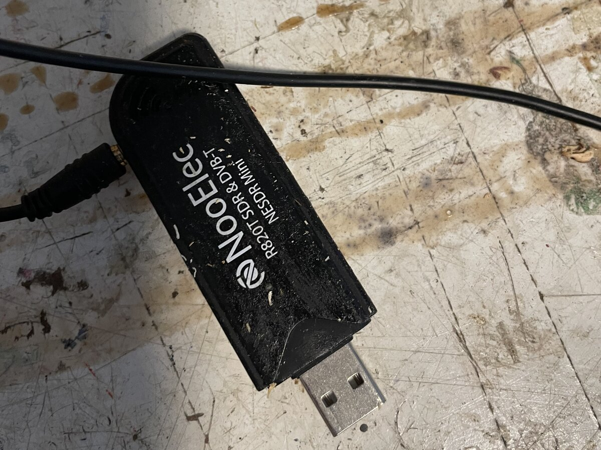

01
Out of the drawer
Tuning in to 1090
Planes constantly broadcast ADS-B messages on 1090 MHz with their position, altitude, speed and callsign. This little RTL-SDR stick can hear them with just a small antenna. After telling Linux to stop treating it as a TV tuner, I let dump1090 do the hard part: it decodes the raw radio pulses and writes out a snapshot of every aircraft it can hear, about once a second.